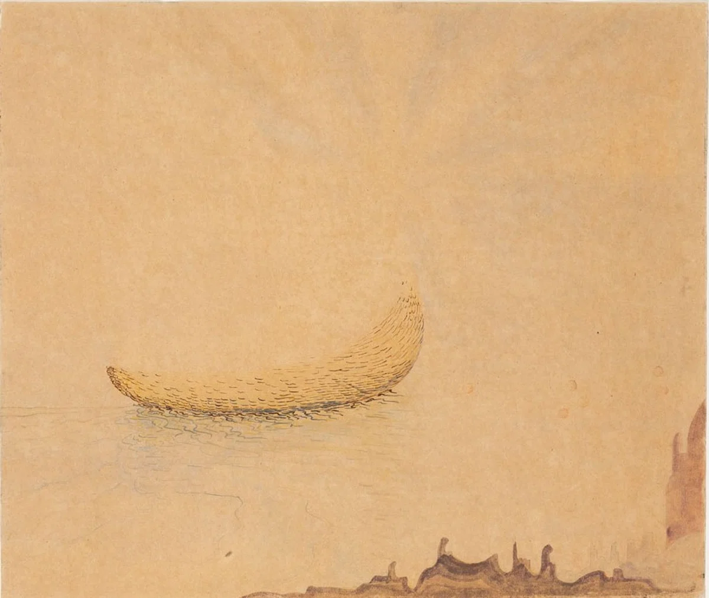
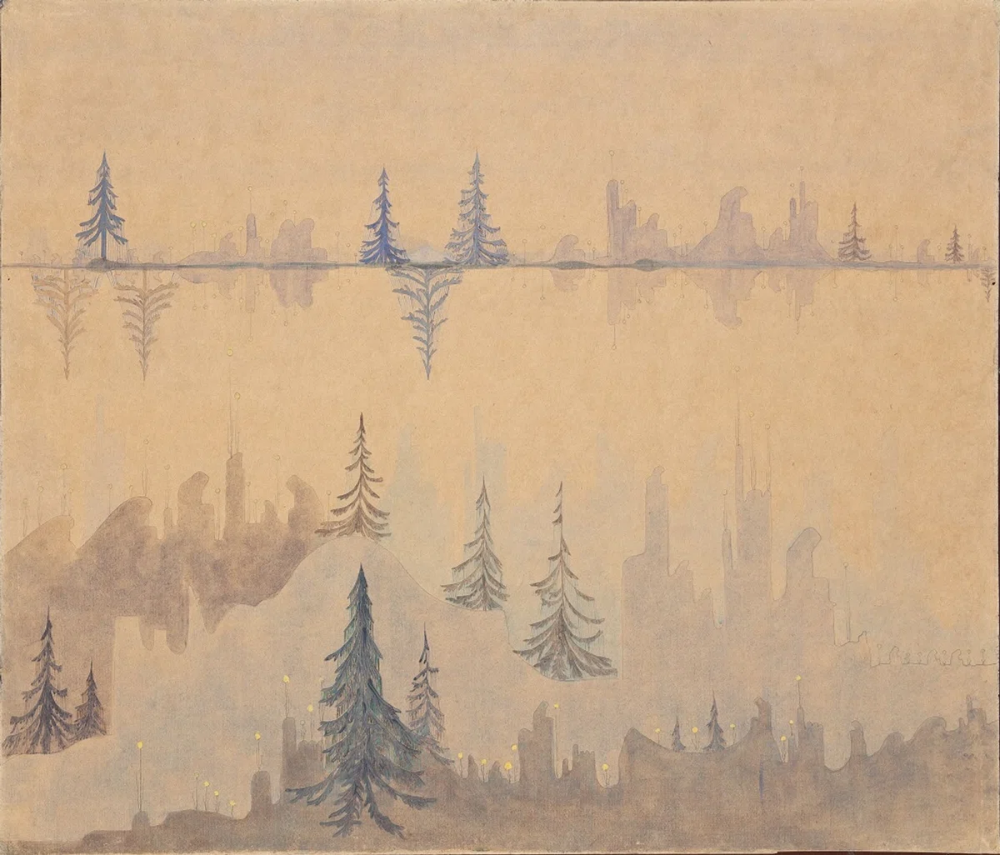

| 作曲時期 | - 2026/4/10 |
| 初演 | 2026/5/16 |
| 編成 | ピアノ独奏 |
| 演奏時間 | 約6分 |
作曲家であり画家でもあるチュルリョーニス（Mikalojus Konstantinas Čiurlionis, 1875 - 1911）はリトアニアの国民的芸術家として親しまれると同時に，20世紀音楽・美術の先駆けとして後の芸術家らに影響を与えた．チュルリョーニスの特異性は音楽と美術の融合方法にあるといえるだろう．音楽と美術を結び付けた他の作家は，スクリャービンの「色彩ピアノ」やカンディンスキー，クレーの「フーガ」作品等，「色」の波長と「音」の波長を関連付けている．また，音楽を絵画に表現した作家らは抽象的モチーフの配置によってリズムを生み出し，音楽を視覚媒体に変換している．一方で，チュルリョーニスの絵画は色彩に関して非常に抑制され，具象的モチーフや風景が描かれている．もともと本職が作曲家であったチュルリョーニスは風景を，もしくは幻想を，「音楽を経由することなく」平面上に作曲したのであろう．音楽の形式的・技法的語彙を直接具象的モチーフとその配置に託し，画面全体を多層的な時間軸で構成しているように感じられる．
さて，本作品はチュルリョーニスの絵画「前奏曲とフーガ Čt 88, 89」に触発されて作曲したものである．当絵画作品はそれぞれ「前奏曲」，「フーガ」と名付けられた２枚の絵で構成された二連画である．前奏曲は画面中央に波に浮かぶ小舟が描かれ，下部に首を垂れる人間のように見える形状が連なり，上部にはうっすらと光線が引かれている．広い余白を伴って小舟がひとつ浮かぶ様子は，画面に時間的長大さを表現し，さみしさと同時に神話的な世界も感じさせる．この前奏曲は未完の作品であり，完成したものを見れば全く別の印象を受けるかもしれないが，私はそこに描かれているもののみを譜面に表現してみた．
フーガはモミの木を主題とし，前奏曲にも描かれていた首を垂れる人間，もしくは都市の建物のようにも見える形状が対旋律として，あるいは間奏の主題として描かれる．画面は上下に２つの横軸をもち，もとの向きの木と水面に映すように反転した木が並ぶ．まさにフーガのように時間軸上を主題が交互に配置され，対旋律をともなって重奏的に響きを作る．


本作品の初演は五月祭にて，自作自演で行われた．下記動画はその際の録音である．
本作品の解説について，下記リンクの note 記事も参考のこと．